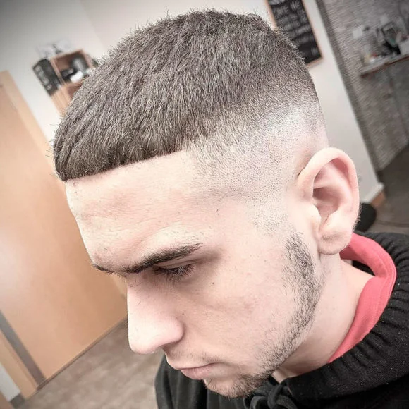

Fade (Degradado)
- con transición gradual del cabello desde muy corto a más largo hacia la parte superior.
- Low fade, mid fade, high fade, skin fade.
Crew Cut (Corte militar clásico)
- Más corto en los lados y un poco más largo arriba.
- Profesional y limpio.
Mullet
- Corto adelante y en los lados, largo atrás.
- Ha vuelto como una tendencia retro-modernizada.

Buzz cut
- Muy corto en toda la cabeza.
- Práctico, varonil y de bajo mantenimiento.
Crop
- Descripción: Laterales muy cortos o rapados con parte superior larga y contrastante.
- Estilo: Urbano, moderno, adaptable a muchos peinados.
.jpg)
Taper Fade (Degradado cónico)
- Similar al fade, pero más sutil. Muy profesional y elegante.
French-Crop
- Corto arriba con textura y flequillo desordenado.
- Muy de moda en Europa.
.jpg)
Corte César (Caesar Cut)
- Corte corto con flequillo recto.
- Inspirado en Julio César, ideal para rostros ovalados o cuadrados.
Pompadour
- Volumen en la parte superior, peinado hacia atrás.
- Clásico y moderno a la vez, ideal para cabello liso o con volumen.

Quiff
- Similar al pompadour, pero más informal y despeinado.
- Muy popular entre jóvenes.